Tráiler
Armas nuevas y granadas de fragmentación, humo y cegadora en acción.
Capturas
Armas
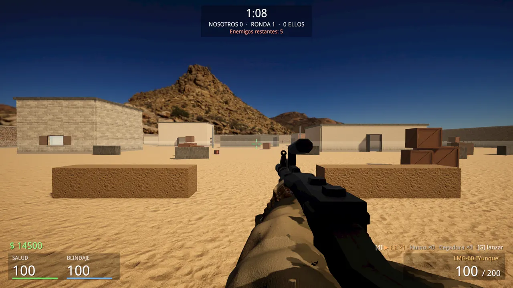
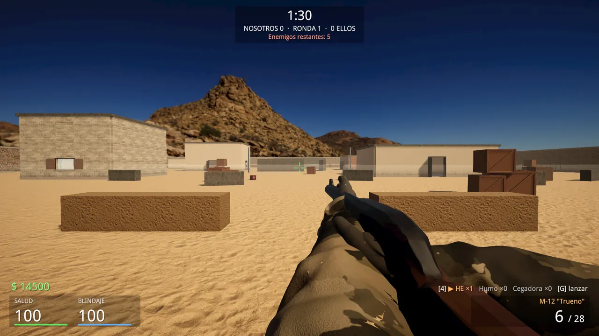
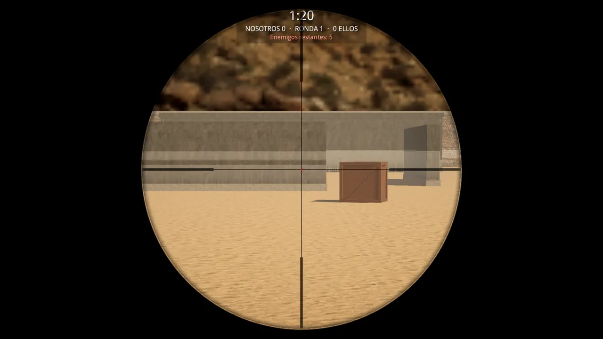
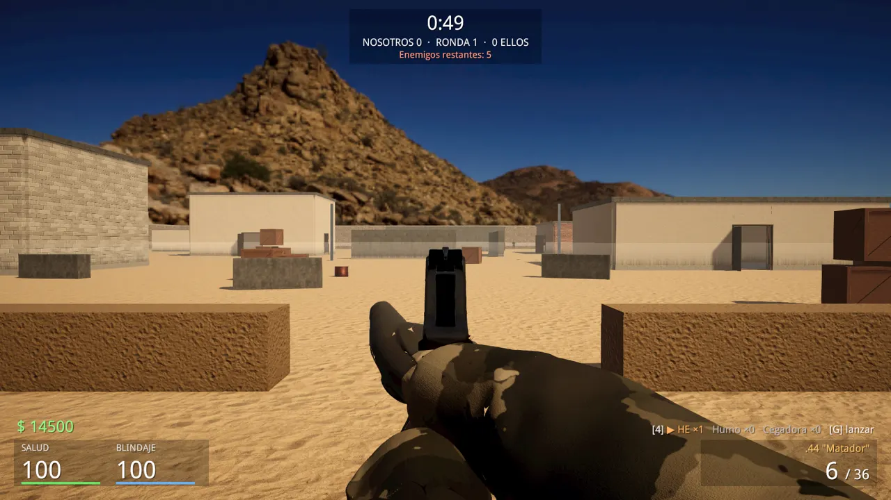
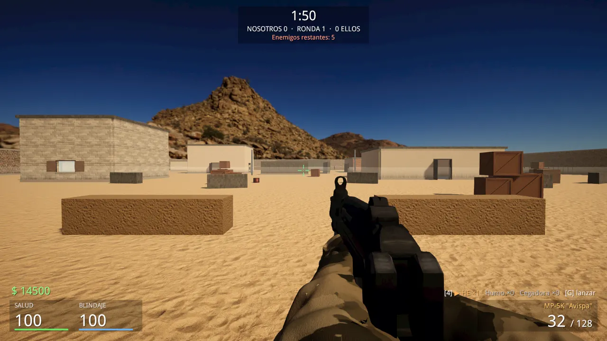
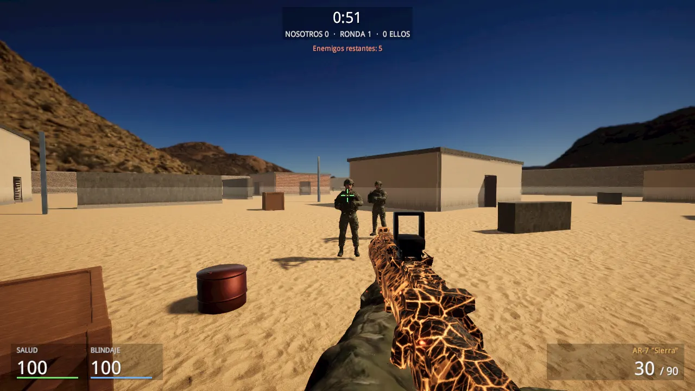
Granadas
Armería y tienda
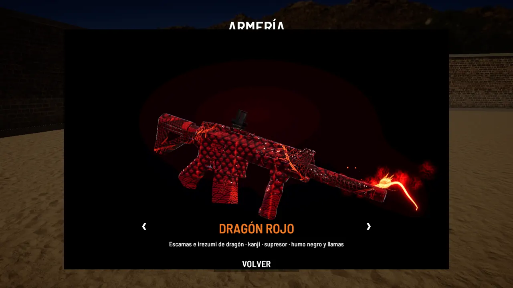
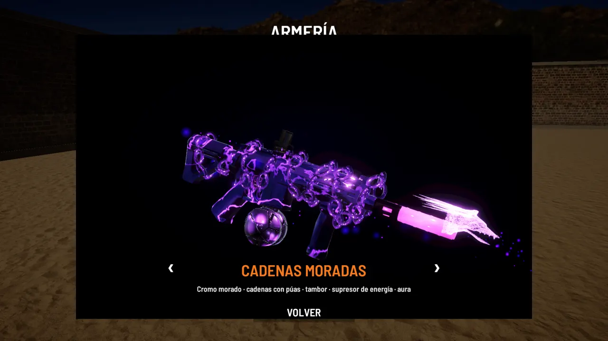
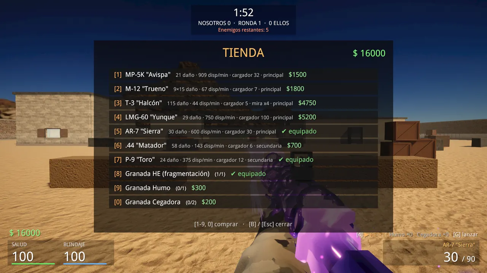
Cadenas Moradas en primera persona.
Mapas
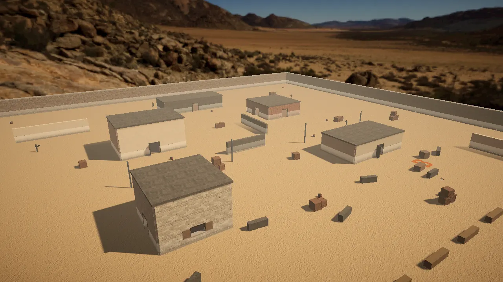
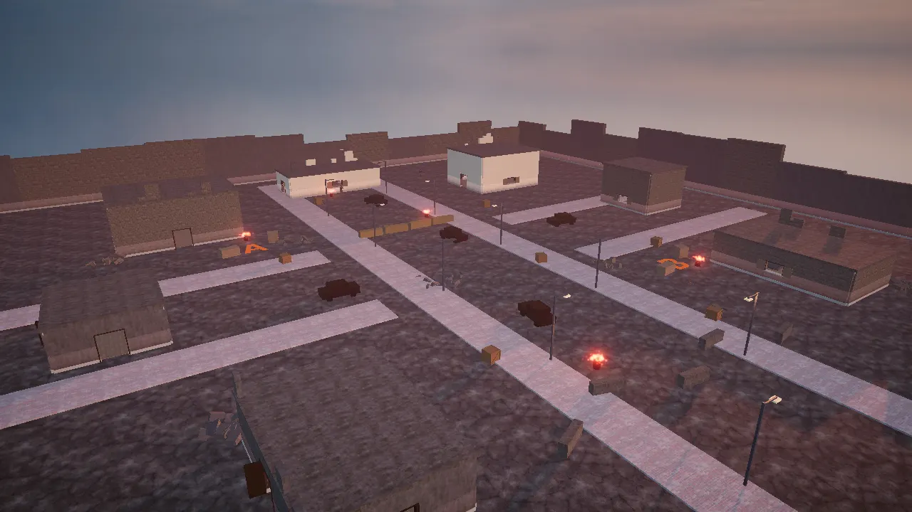
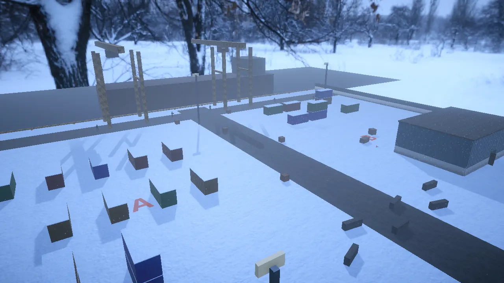
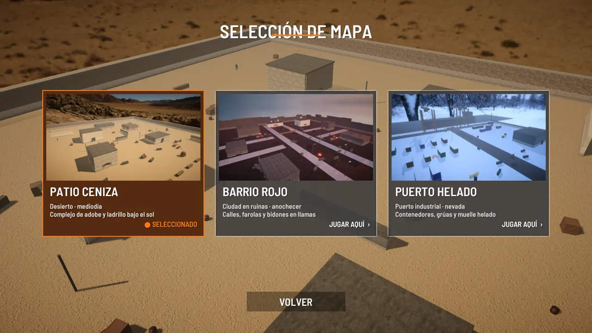
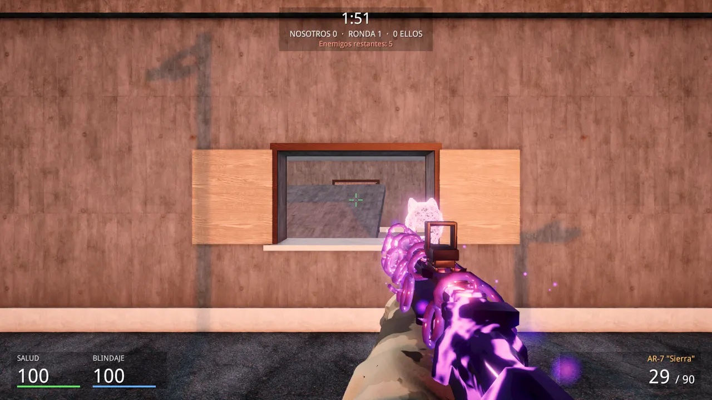
Características (PC)
Arsenal
- 5 armas nuevas: subfusil, escopeta, francotirador, ametralladora ligera y revólver
- Rifle AR-7
- Pistola
- Cuchillo
Granadas y tienda
- Granada de fragmentación
- Granada de humo
- Granada cegadora (flash)
- Tienda de compra al inicio de ronda
Mundo y combate
- Skins animadas: Dragón Rojo, Cadenas Moradas, Tóxica
- Cristales rompibles
- Bots con IA
- 3 mapas: Patio Ceniza, Barrio Rojo, Puerto Helado
Código Ceniza para Android
La edición móvil: un juego distinto, con planta y desactivación de bomba, combate a muerte y práctica en 3 mapas (Dunas, Fábrica, Ciudad) con 15 armas y controles táctiles.


Descargas
Windows PC — Operación Espejismo v3.16.3
▼ Descargar para Windows- Windows 10/11 de 64 bits
- CPU de 4 núcleos, 8 GB de RAM
- GPU compatible con DirectX 11 (GTX 960 / RX 570 o superior)
- ~1,5 GB libres
ZIP · descomprime y ejecuta el .exe. MD5: e1030502a61da32b805bfe4697eba0a9
Android — edición móvil
▼ Descargar APK (Android)- Android 5.1 o superior
- APK · 4,9 MB
- Activa «Instalar apps de origen desconocido»
MD5: 78966a9958b0f150f31e223b3d6bcfda
Descargas alojadas en Gofile (enlaces estables).